Submit Jobs Across Clusters with cluv¶
cluv is a lightweight command-line tool for syncing UV-based Python projects and submitting jobs across multiple Slurm clusters, including the Mila cluster.
Many Mila researchers hold compute allocations on other Slurm clusters,
such as the DRAC or PAICE clusters.
Moving a project between clusters by hand can be tedious and error-prone,
especially when synchronizing code, dependencies, datasets, and results.
cluv automates this process, allowing development to happen locally while
jobs run on any cluster and getting access to all the available compute
resources without having to choose a single cluster.
This guide introduces cluv's core commands and the typical workflow for developing a project locally and running it as a Slurm job.
Before you begin¶
-
Obtain a Mila account, enable cluster access and MFA, configure SSH access, and connect to the cluster for the first time.
-
Manage Python Dependencies with
uv
Install uv, manage project dependencies, run reproducible Slurm jobs, and run standalone scripts.
-
Submit interactive and batch jobs, and learn the jobs, steps and tasks model.
What this guide covers¶
- Install
cluv - Connect to clusters with
cluv login - Synchronize code and fetch results with
cluv sync - Submit job to clusters with
cluv submit - Monitor clusters and jobs with
cluv status
Install cluv¶
Add cluv as a dependency of the project, or install it as a standalone
command-line tool:
Requirements
- Python 3.11 or higher, plus the
uvpackage manager, installed locally. - A project hosted in a GitHub repository.
- SSH access configured in
~/.ssh/configfor each target cluster, with ControlMaster sessions enabled for passwordless authentication. Windows users need WSL2, since cluv does not run natively on Windows.
Initialize the project¶
Run cluv init from an existing project, or from an empty directory to
create a new one:
If the project already has a pyproject.toml file, cluv init adds a
[tool.cluv] section to it, where clusters and other cluv settings are
configured. Otherwise, it creates a new project with uv init before adding
that section.
cluv init also adds a scripts/ directory with template job scripts, and a
logs symlink pointing to the configured results_path on the cluster.
Connect to clusters with cluv login¶
Establish SSH connections to all configured clusters:
cluv login opens a persistent SSH connection (a ControlMaster session) to
each cluster, so later cluv commands reuse those connections without asking
for authentication again.
To connect to a single cluster only, pass its name:
Important
cluv does not modify SSH configuration. SSH access to each cluster must
already work. Run mila init from milatools to set up SSH access to the
Mila cluster.
Synchronize code and fetch results with cluv sync¶
cluv sync pushes local git commits, then on each cluster:
- Clones the project (if needed), fetches, and checks out the current commit.
- Runs
uv syncto install dependencies. - Fetches back any new results via
rsync, from theresults_pathconfigured inpyproject.toml.
To sync a single cluster, pass its name:
Note
cluv submit synchronizes the project automatically before submitting, so
running cluv sync beforehand is only needed to fetch results.
Syncing datasets¶
cluv sync can also replicate a dataset to every configured cluster, when
data_source and datasets_path are set under [tool.cluv] in
pyproject.toml:
| pyproject.toml | |
|---|---|
Dataset sync is enabled by default whenever data_source is set. Skip it for
a single run with:
Submit job to clusters with cluv submit¶
Submit a job to a cluster¶
Submit a job to one cluster with cluv submit <cluster> <job-script>:
Note that arguments before -- are passed to sbatch (--time=00:10:00
limits the job to 10 minutes). Everything after -- is forwarded to the job
script, which passes it to uv run.
Submit a job to multiple clusters¶
Replace the cluster name with the special value first to submit a job
to all connected clusters at once:

cluv watches the queue on every cluster and, as soon as one job starts
running, cancels the duplicate jobs on the other clusters. Clusters whose
queue is busy are skipped once a job has started elsewhere. Pressing
Ctrl+C during submission cancels every job that was already submitted.
Submit to multiple allocations on the same cluster¶
The same racing behavior applies to allocations. List several sbatch_args
under a cluster's configuration in pyproject.toml to have cluv try each
allocation and keep whichever starts first:
| pyproject.toml | |
|---|---|
cluv submit rorqual then submits one job per allocation, waits until one of
them starts, and cancels the others. This is useful whenever it is unclear
which allocation will be scheduled first, for example when one has been used
more heavily than the other recently.
Monitor clusters and jobs with cluv status¶
Show an overview of all configured clusters (connection state, available GPUs and storage, etc.) and the status of submitted jobs:
Key concepts¶
[tool.cluv]- Section added to the project's
pyproject.tomlbycluv init, where clusters and other cluv settings are configured. [tool.cluv.clusters.<name>]- Per-cluster overrides (
sbatch_args,results_path,env, etc.). A value set here takes precedence over the corresponding global value for that cluster only. - ControlMaster session
- A persistent SSH connection reused by later SSH commands without
prompting for authentication again.
cluv loginopens one per cluster, andcluvrequires them to be configured for passwordless authentication. results_path- Directory on each cluster where job results are written, and that
cluv syncfetches back to the current machine.
Next step¶
-
Full command reference, configuration options, and Hydra launcher details.
-
Example projects demonstrating how to configure and use cluv to sync and submit jobs across clusters.